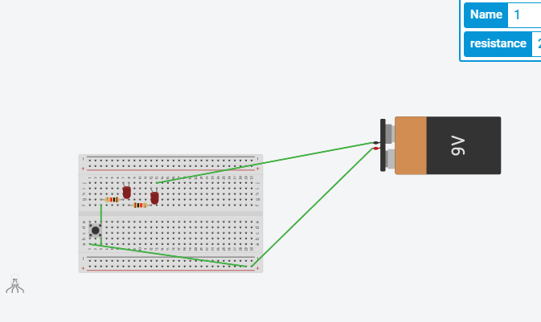

Mahlet Copeland
mali.ethiopia10@gmail.com

Hi my name is Mahlet C and I am a Junior. I am in Girls Who Code this summer so I can learn some basics in coding. I enjoy science and technology also I am intrested in art and cooking. My favorite food is ice cream. My favorite animal is a dog.
Look at my scratch Introduction to myslef.Look at my Banana game I created in scratch. 
That is my circuit I made it in series. It has a button that when pushed turns on the two leds. I learened that I could have also creted the same circuit in parallel.
| Name and Picture | How is it used | How it works |
|---|---|---|
| 3-pin header | ||
| Whisker wire | ||
| Phototransistor | ||
| Infrared detector | ||
| Push-button (extra) | ||
| Capacitor (extra) | ||
| Infrared LED (extra) |